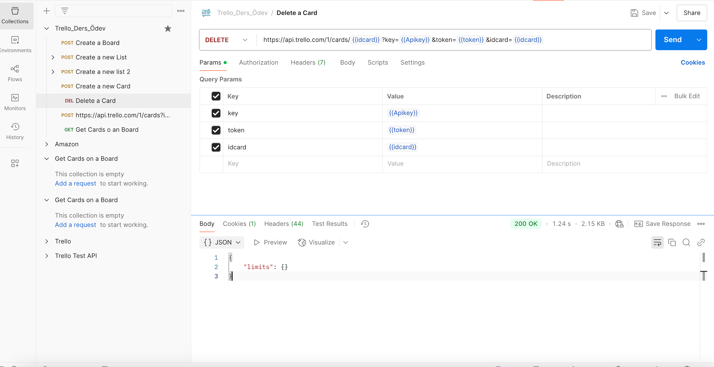

Gorev 06
Olusturulan bir karti silin
Task 4 veya Task 5 ile olusturulan kartlardan birini silme istegi.
Istek Bilgisi
Test Betigi
Bu gorev icin test scripti belirtilmedi.
Yanit Kaniti

Gorev 06
Task 4 veya Task 5 ile olusturulan kartlardan birini silme istegi.
Bu gorev icin test scripti belirtilmedi.
